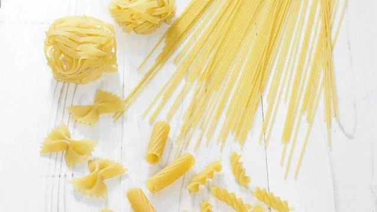
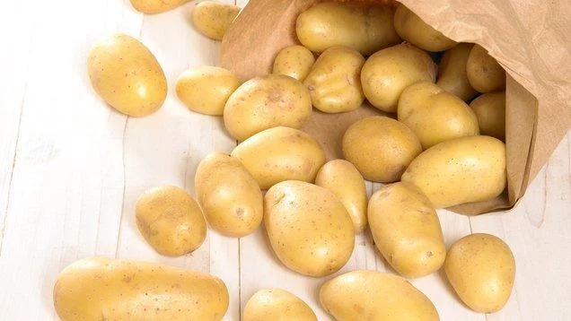
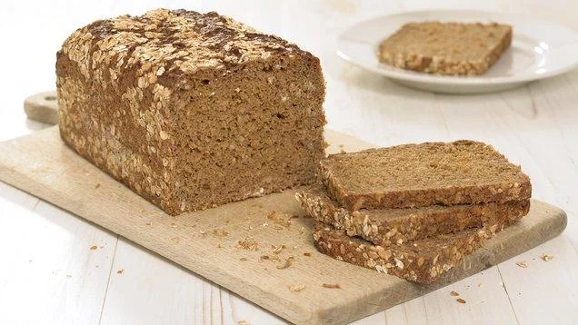

Karbonhidratlar – Besin depolarımız

Karbonhidratlar her zaman insanların diyetinde önemli bir rol oynamaktadırlar. Birinci dereceden enerji verici olarak kullanılırlar ve açlık anında ilk tüketilen besin maddeleridirler. Yapıtaşları glikozdur. Hayvanlarda glikojen bitkilerde ise nişasta şeklinde depo edilirler. Karbonhidratların çoğu, canlılar için temel besin maddeleridir. Yeşil bitkilerde fotosentez sonucu meydana gelirler. Otçul hayvanlar bu ihtiyaçlarını bitkilerden, etçil hayvanlar da otçullardan tedarik ederler. Vücutta 1 gr karbonhidratın yanması sonucunda ortalama 4 kalori açığa çıkar
Görevleri Nelerdir ?
Karbonhidratlar, çoğu canlılar için enerji veren temel besin maddeleridir. Proteinlerin vücutta yapım ve onarımda kullanılmalarını sağlarlar, yağları metabolize ederler, karbonhidrat alınmadığında vücut enerji için yağları kullanmak zorunda kalır. Karbonhidratlar sinir dokusu için gereklidir ve beynin tek enerji kaynağıdırlar. Bazı karbonhidratlar sindirim için gerekli olan ve bağırsaklarda bulunan sağlıklı bakterilerin oluşumunda yer alır. Karbonhidrat eksikliğinde sindirim sistemi problemleri görülür. Karbonhidratların çoğu iyi birer lif kaynağıdır. Lifler ise vücudumuzu kalp hastalıklarından, kanserden, diabetten ve sindirim problemlerinden korur.
Karbonhidrat eksikliği nelere sebep olur ?
Öncelikle B vitaminleri, bazı amino asitler ve lif eksikliği görülür. Bunun yanında halsizlik, yorgunluk, depresyon, unutkanlık, sinir sistemi bozuklukları, sindirim sistemi rahatsızlıkları, proteinin vücut tarafından kullanılamaması sonucu yapım ve onarımda azalma, yetersiz lif alımından ötürü uzun vadede kanser ve kalp hastalıkları görülebilir.
Çeşitleri nelerdir:

Dengeli bir diyette toplam kalorinin yüzde 50 ya da yüzde 60’ı karbonhidratlardan gelmektedir. Karbonhidratların iki temel tipi vardır: biri basit karbonhidratlar diğeri ise kompleks karbonhidratlardır. Basit karbonhidratlar , balda ve meyvede bulunan şeker, mısır şekeri, süt şekeri ve toz şekerdir. Çok kolay sindirilir ve hızla kana karışır ve kan şekerini hızla yükseltirler ve aynı zamanda da hızla düşmesine neden olabilirler. Bu durum da kişilerde çabuk acıkma ve doygunluk hissinin azalmasına neden olabilir. Böylece yeniden yemek istenebilir. Bütün tatlılar, meşrubatlar, çikolata, kurabiyeler, kekler, bisküviler ve hamur işleri fazla miktarda basit karbonhidrat içerir.
Kompleks karbonhidratlar ise tahıl, ekmek, bazı meyveler, sebze, baklagillerde bulunan karbonhidrat türüdür. Birçok kompleks karbonhidrat, vitamin, lif ve besleyici değeri yüksek olan yiyeceklerde bulunurlar. Kompleks karbonhidratlar rafine edilmemiştir yani lifleri ayrılmamıştır. Bu sebeple daha sağlıklıdırlar. Lifli besinler sindirim sırasında daha fazla metabolik enerji tüketirler. Sindirimleri daha uzun sürdüğü için, kan şekerini çok hızlı yükseltmezler. Kandaki şeker seviyesinin sabit kalmasına yardımcı olurlar. Lif içeriğinden dolayı birçok hastalığı önlerler. Sindirim sistemi için de daha yararlıdırlar.
Bir günde alınması gereken karbonhidrat miktarı:

Kişilerin metabolizma hızı, yaşa, cinsiyete, aktivite düzeyine, kiloya göre değişmektedir. Metabolizma hızına göre alınması gereken kalori belirlenir. Bu kalorinin ortalama olarak %50’si karbonhidratlardan, %15’i proteinlerden, %30’u ise yağlardan sağlanmalıdır. Metabolizma hızı 2000 kkal olan bir bireyin aldığı enerjinin 1100 kilokalorisi karbonhidrattan gelmelidir. Karbonhidratın miktarı belirlendikten sonra cinsi için glisemik indeksine ve yüküne bakarak karar verilmelidir. Mesela pirinç pilavının glisemik indeksi 139, glisemik yükü 59 dur. Buna karşın bulgur pilavının glisemik indeksi 48, glisemik yükü 12 dir. Bu iki besinin aslında kalorileri yakındır. Kaloriden çok içerik önem kazanmaktadır. Glisemik indeksi ve yükü düşük olan besinler tok tutar ve kilo verilmesine yardımcı olurlar.
Karbonhidratlı yiyecekler nelerdir ?
Mısır gevreği, tahıl ve ekmek çeşitleri, pirinç, arpa, yulaf, makarna, kayısı, hurma, muz, incir, üzüm, portakal, armut, ananas, karpuz ve kuruüzüm yüksek karbonhidrat içermektedir. Baklagil türlerinden; nohut, kurufasulye, börülce, bakla yüksek kompleks karbonhidrat taşırlar. Bazı kök sebzelerden, patates, tatlı patates, havuç, mısır da bu gruba dahildir. Toz şeker, şekerleme, kek, mısır şurubu, meyve suyu, ekmek, beyaz undan yapılmış makarna ve mısır gevreği basit karbonhidratlı gıdalar sınıfına girmektedir. Yüksek miktarda kompleks karbonhidrat taşıyan besinler ise kepek, yulaf, mısır, arpa, karabuğday, mısır unu, makarna, patates, kepekli pirinç, kıyılmış buğday, tam tahıllı gevrek, bezelye, musli, fasulye, mercimektir. Yüksek karbonhidratlı besinler bize, sağlıklı ve formda olmak için vitamin, mineral ve lif açısından yeterli bir kaynak oluştururlar.